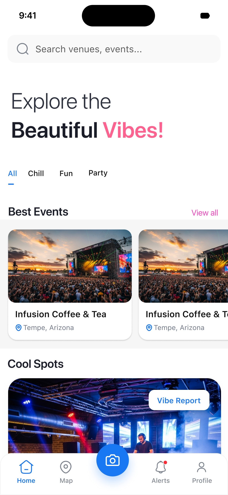
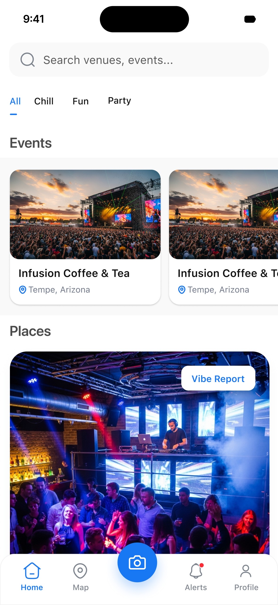
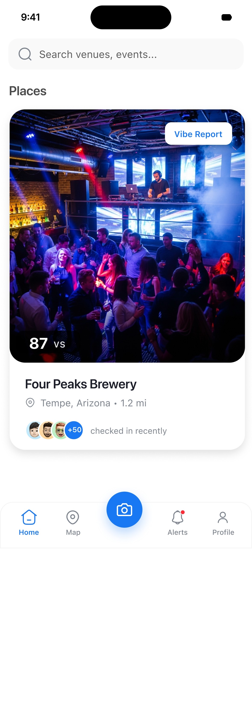
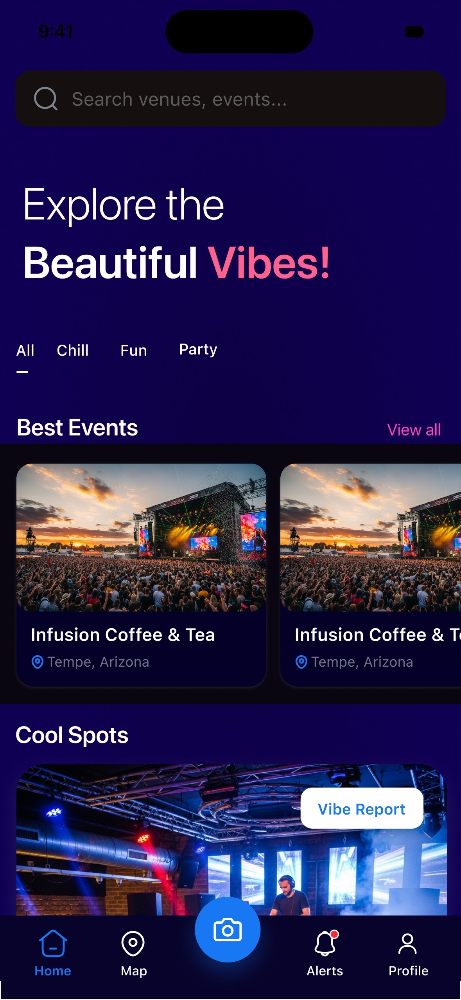
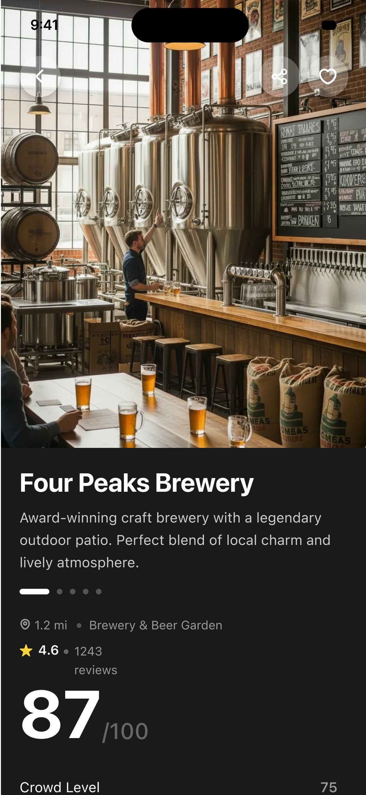
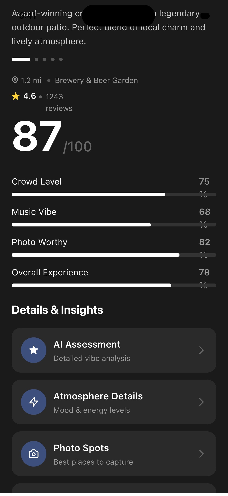
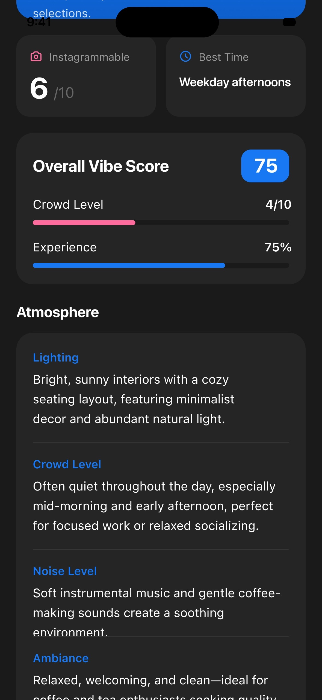

Live social discovery
People at a venue post the vibe in real time, GenAI turns it into data, and the map shows what is actually happening right now. Co-founded, designed and shipped to the App Store.
To decide where to go tonight, people check the map, Instagram, stories, reviews and group chats, and still don't know what a place feels like right now. Photos are old, reviews are older. The live vibe is nowhere.
Our research showed the decision runs on FOMO and spontaneity, not on star ratings.



There were two honest ways to build this, so I built both. One organised everything around places: open a map, browse venues. The other around people: a feed of who is out tonight.
Places won, clearly. People opened the app asking "where is good right now", not "who is out". So the map became home, filtered by vibe instead of category, because nobody chooses a night out by the word "bar".


Posting a vibe takes seconds: one photo, one line. GenAI classifies the atmosphere into structured data, so "packed rooftop, live music" becomes something you can search and filter.
Every venue gets a Vibe Report: a scorecard built from what people posted in the last hour, not last year. Crowd level, music, how photo-worthy it is, and an AI read on the atmosphere.




One photo and one line. GenAI handles the rest.
Chill, fun, party: the map filters by feeling.
A live scorecard per venue, built from the last hour.
Vibin had to feel like the streets, not like an app. I designed every asset in-house: event posters, vendor flyers, merch and social content, all from the same gradient-and-glow system as the app.


Vendors get visibility and foot traffic. Users get live vibes and deals at the door. Eventbrite charges 3.5% plus $1.59 a ticket and Posh takes 15%. Vibin charges neither side.

Vibin is live on the App Store. Post-launch behaviour invalidated three assumptions from our interviews, so I decided each next change from what people did, not what they said.